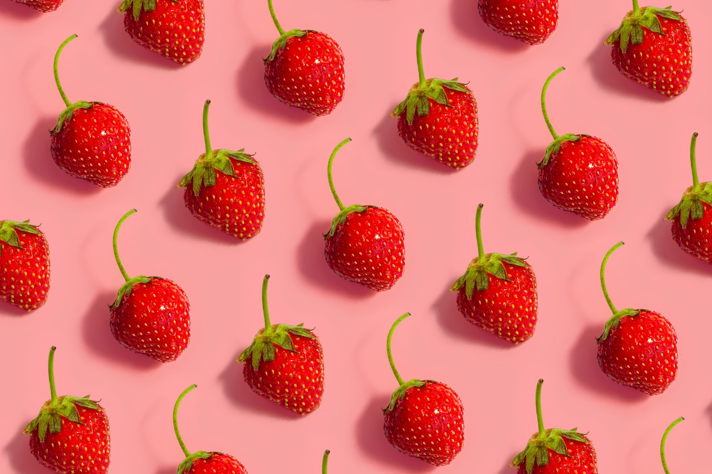

케이크 위에 올려진 딸기: 케이크의 꽃으로 불리며, 쇼트케이크 한 조각에 딸기 1개가 올려져 있는 것은 창작물과 현실 공통의 클리셰이다. 케이크 문서를 참조. 여담으로 케이크 장식용 딸기는 먹어보면 나파주의 단맛을 제외하면 신맛만 나는데, 이는 질 낮은 딸기를 사용해서가 아니라 사용되는 딸기의 품종이 다르기 때문이다. 장식용 딸기는 사계딸기라고 하는 조금 맛없는 품종의 딸기를 사용한다. 대신 연중 생산할 수 있다는 것이 장점. 요즘에는 맛있고 꽃도 감상할 수 있는 관하(觀夏)가 개발됐다. 현재는 초촉성재배나 촉성재배가 널리 이루어져 딸기의 제철이 초여름에서 겨울로 넘어갔다. 시장에 빨리 나오면 비싼 값을 받으므로 너도나도 빨리 출하하기 위해 경쟁한 결과.
중국에서도 사과와 수박 다음으로 인기 있는 과일로 골목마다 하나씩은 있는 과일가게에서 한가득 쌓아놓고 팔고 있다. 가격은 한국의 절반 정도. 물가를 비교해보면 한국과 얼추 비슷한 느낌이다. 한국의 주품종은 L 사이즈인 데 비해 중국은 M/S 사이즈가 주종. 땅이 넓어 여러 기후대를 가진 중국 특성상 대도시에는 사시사철 언제나 각 지방의 제철 딸기가 공급된다. 당도도 높으므로 유학생이나 출장으로 중국에 체류할 기회가 있다면 싼 가격에 잔뜩 먹어두자. 통념과는 달리 딸기는 크다고 달고 풍미가 진한 게 아니다. 품종의 평균 크기보다 작으면 영양 공급이 충분히 되지 않아 당도가 떨어질 수 있다는 것이고 반대로 평균보다 큰 경우도 성장촉진제 같은 게 사용되어 과육의 성장만 발달해 맛이 싱거울 수 있다.
일본에는 딸기와 연유를 함께 진열해 둔 가게가 많다. 연유는 십중팔구 편하게 짜 먹을 수 있도록 튜브에 담겨 있다. 딸기에 연유를 짜서 발라 먹는 등 딸기에 곁들여 먹도록 하기 위한 판촉 차원의 진열 방식인 셈이다.